Welcome to Takana Sensei’s Yamanashi Wine Dyeing Workshop!
We are Takana Sensei’s Yamanashi Wine Dyeing Studio, a dye shop that tackles the issue of industrial waste in Yamanashi while creating new value through natural materials.
While Yamanashi is famous for wine, the industry also faces an environmental issue—large amounts of grape skins, known as pumice, are discarded during the wine-making process. At our workshop, we repurpose these natural by-products to create eco-friendly dyes, contributing to the SDGs (Sustainable Development Goals) while offering visitors a hands-on, earth-friendly experience.
Through our workshops, you can create your very own dyed T-shirts or hand towels using pumice-based dyes, connect with Japan’s traditional craft culture, and help give new life to what was once considered waste. Our mission is to brighten both the environment and the future of our community.
Who Is This Workshop For?
Anyone looking for a unique fabric dyeing experience
Visitors searching for activities near Lake Kawaguchi or in Fujiyoshida
Those who love hands-on, creative experiences
People who want to design their own one-of-a-kind items
Families and friends seeking a memorable group activity
Travelers who wish to learn about Japanese traditional craft techniques
Indoor activity seekers who want something fun to do, rain or shine
Six Features & Promises of Our Workshop
Participating in our dyeing class is not just about learning—it’s about creating something truly personal while having fun. Here are six things that make our workshop special:
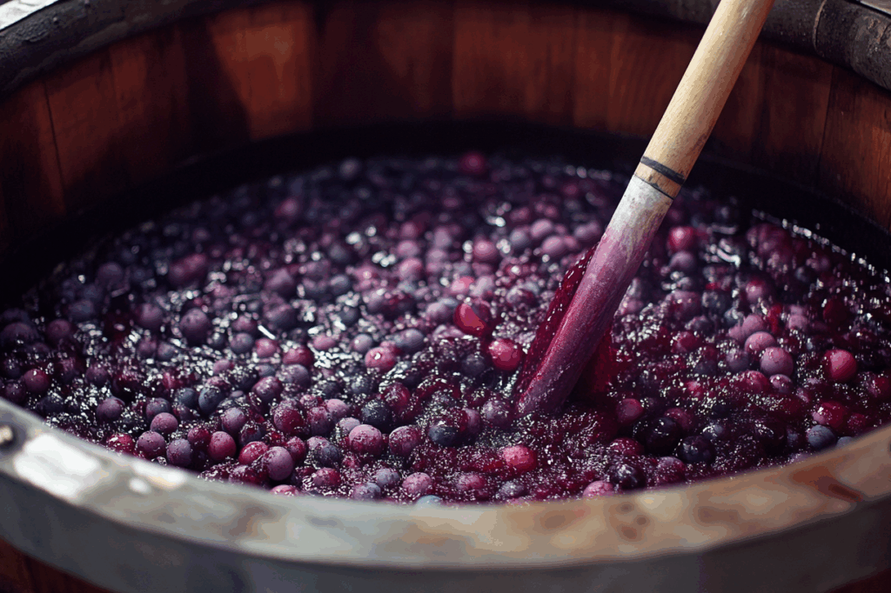
1.Connect with Tradition
Indigo dyeing is a treasured part of Japanese culture. Learn this time-honored technique and feel the history behind every fold and hue, as though traveling back in time.
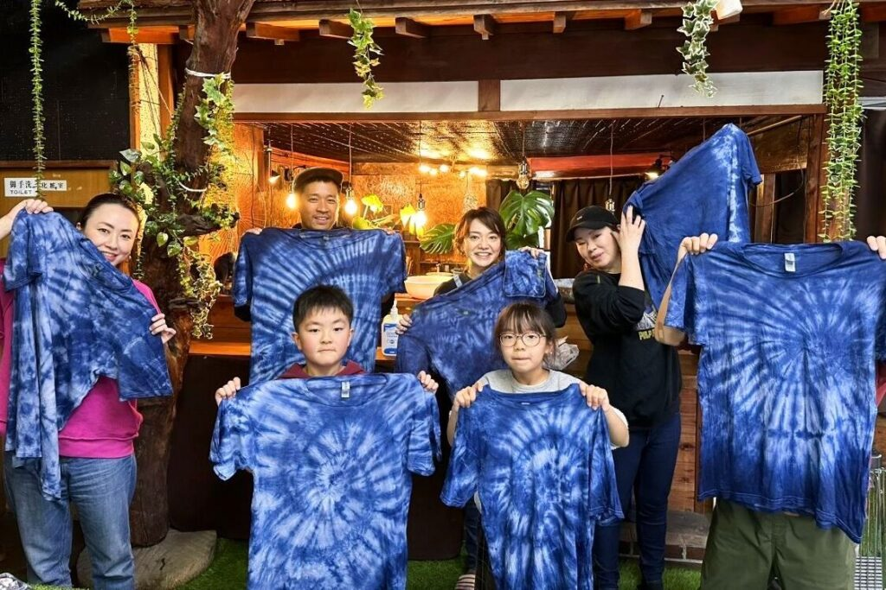
2.Learn by Doing
From basic dyeing methods to mastering color techniques, our hands-on lessons let you see, touch, and feel the magic of indigo.
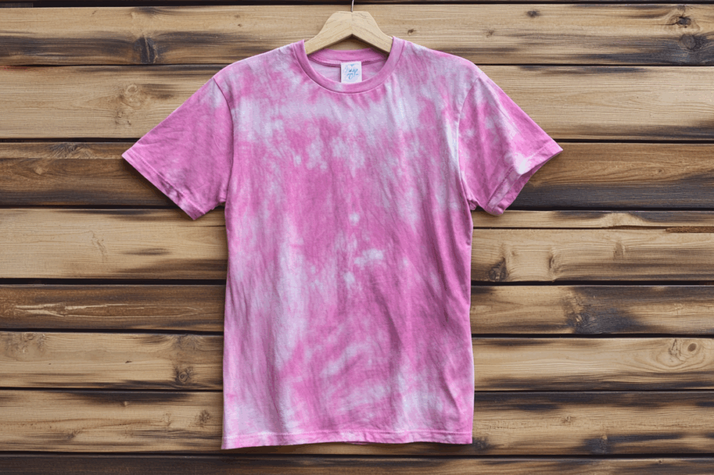
3.Create Your Own Masterpiece
Design and dye a T-shirt, hand towel, or other everyday item. Take your finished work home—a lasting memory and a piece of art you made yourself.
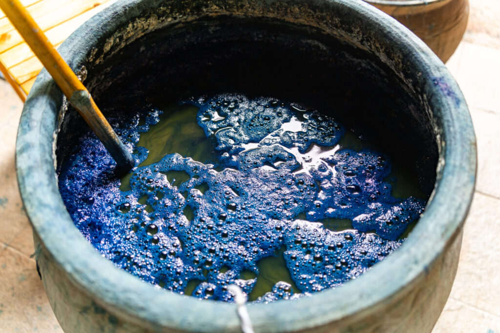
4.Natural & Eco-Friendly
We use natural indigo and pumice dyes, offering an environmentally conscious craft experience that celebrates the gifts of nature.
5.Fun for Kids & Families
Our simple, safe process and clear guidance make the experience exciting for children, fostering curiosity and creativity as they watch colors magically transform.
6.Meet Our Resident Cats
Our studio is home to four rescue cats, including our namesake Sensei Takana, the beloved “teacher” cat. Relax and create alongside these friendly companions.
Why We Use Pumice (Grape Skins)
Yamanashi, Japan’s top wine-producing region, generates tons of grape skins during wine production. These skins are often treated as waste, even though they hold natural pigments and nutrients. By transforming this “waste” into vibrant, sustainable dyes, we reduce environmental impact and create new value for the local economy—helping both people and the planet.
Our Mission
Yamanashi is one of Japan’s leading wine-producing regions, but a large amount of pumice—the leftover grape skins from wine production—still goes to waste.
We saw this as a missed opportunity. By transforming pumice into natural, people- and planet-friendly dyes, we aim to reduce environmental impact while creating new local value.
This initiative is more than just eco-friendly; it’s part of our vision for a sustainable future built on the treasures of our region.
Features of the Activity
Uses dye based on pumice (grape pomace)
Eco-friendly, helping reduce industrial waste
Focused on beautiful natural shades, resulting in a gentle pink color
Popular among women and children—easy and fun for anyone to enjoy
DIY at home possible using take-home dye kits
Emphasizes local sustainability, using resources from Yamanashi Prefecture
Recommended Experience
Dyeing Experience, Lake Kawaguchi, Grapes, Plant-Based Dyeing, Pumice
Overview
In this dyeing experience, participants use grape skins (pumice) and flowers to create their own unique works while enjoying the natural beauty of plant-based colors. The vivid yet gentle pink tone is especially popular with women and children. The process is simple, making it safe and enjoyable even for young children and beginners. It’s a perfect activity to create lasting memories with family and friends!
Important Notes
The color of wine-dyed fabrics may change to light blue, purple, or pink, depending on environmental conditions.
This is caused by anthocyanin, a natural pigment found in grapes—the main ingredient in wine. The final color can vary based on pH levels and temperature during or after dyeing.
Using neutral detergent will give the fabric a purplish pink tone.
Using a mildly alkaline detergent will turn it light blue.
To preserve the pink hue, use a mildly acidic detergent, or soak the item in water mixed with citric acid after washing and before drying.
Workshop Flow
The pattern created during the dyeing experience is determined by how you tie the T-shirt. Please decide in advance what kind of pattern you would like to make before starting the dyeing process.
1.Arrival & Check-in
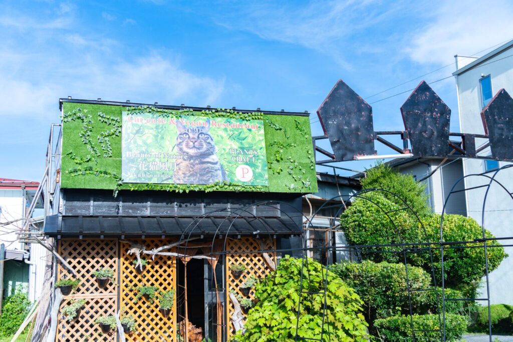
Please arrive at least 5 minutes before your scheduled time. Check-in takes place at our sister shop “Fujiya,” located just across the street. Once you arrive, please enter the shop and complete the check-in process. A staff member will guide you to the workshop after that.
2.Introduction
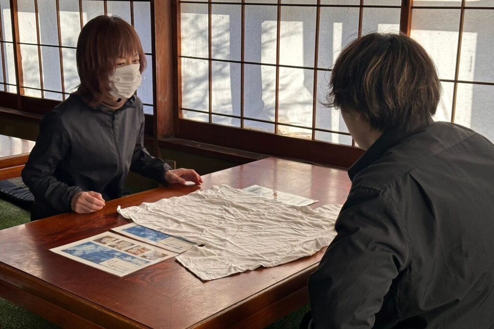
You’ll be welcomed by our staff, who will introduce the workshop and explain how the dyeing process works. In addition to creating your own piece, you’ll also learn about the unique pumice dyeing method rooted in Yamanashi’s wine culture, as well as the history and beauty of traditional Japanese dyes like indigo. It’s more than just a craft—it’s a chance to connect with local tradition and sustainable practices.
3.Choose Your Dye
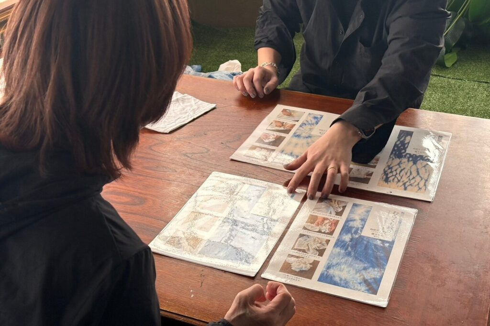
You can choose from three types of dyes: Pumice (made from grape skins), Indigo (a traditional Japanese blue dye), or Sumi (black ink dye). If you are joining as a group, each person may select their preferred dye individually.
4.Choose Your Pattern
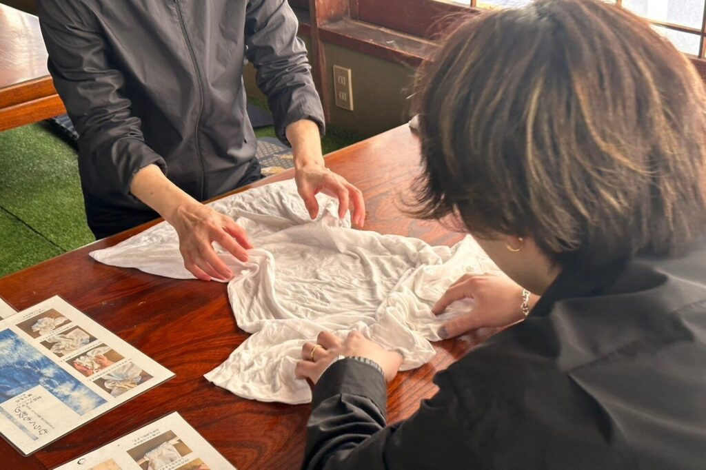
Next, choose your preferred dyeing technique. Our experienced staff will guide you through various options such as spiral tie-dye, murakumo (cloud-like patterns), cylinder wrapping, or rubber band tie-dye. You can even combine multiple techniques to create your own unique design.
5.Prepare & Bind Your T-Shirt
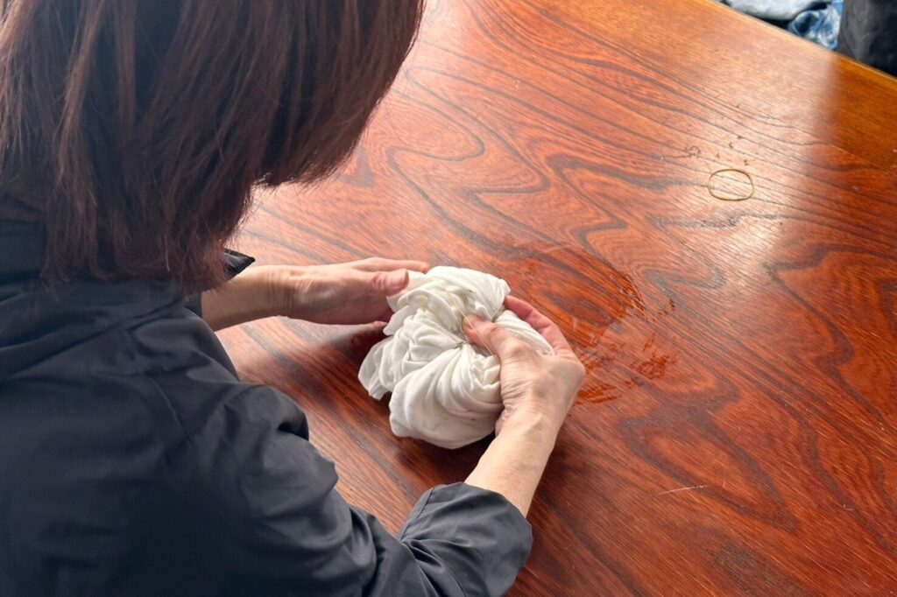
Soak your T-shirt in water to help the dye absorb better. Then, bind it tightly using strings, rubber bands, or sticks. If the binding is too loose, the dye will seep in too deeply, making it difficult to form clear patterns. Since this step can require some strength, we recommend that children work together with an adult.
6.Dye Bath
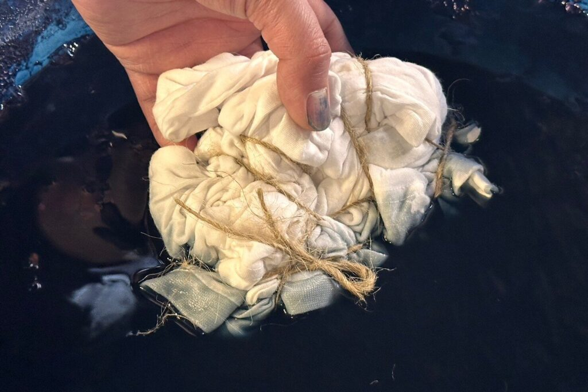
After tightly binding your shirt with strings or rubber bands, you’ll submerge it in a large container filled with your chosen dye. Each dye requires a different soaking time—indigo takes just a few minutes, while sumi needs about 10 minutes. While you wait, imagine how the colors and patterns will turn out!
7.Rinse & Reveal
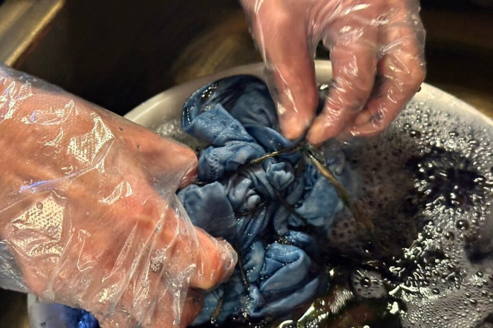
When the dyeing time is up, remove all strings and rubber bands. Rinse your shirt thoroughly with water to remove excess dye—but not too much or too little, as either can affect how clearly the pattern appears. After rinsing, wring out the fabric well to remove excess water.
8.Unfold & Admire
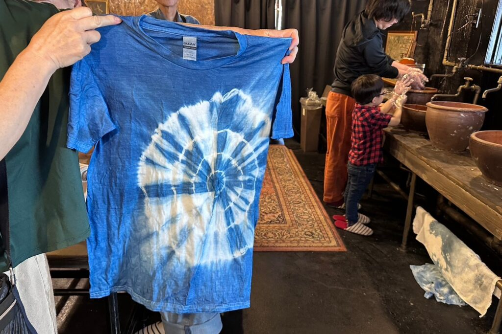
Unfold your T-shirt and take a look!
Your one-of-a-kind design is now complete. Some results may match your original image, while others might surprise you—but that’s the charm of hand-dyeing. Whatever the outcome, it’s your own unique creation.
9.Photo Time & Memories
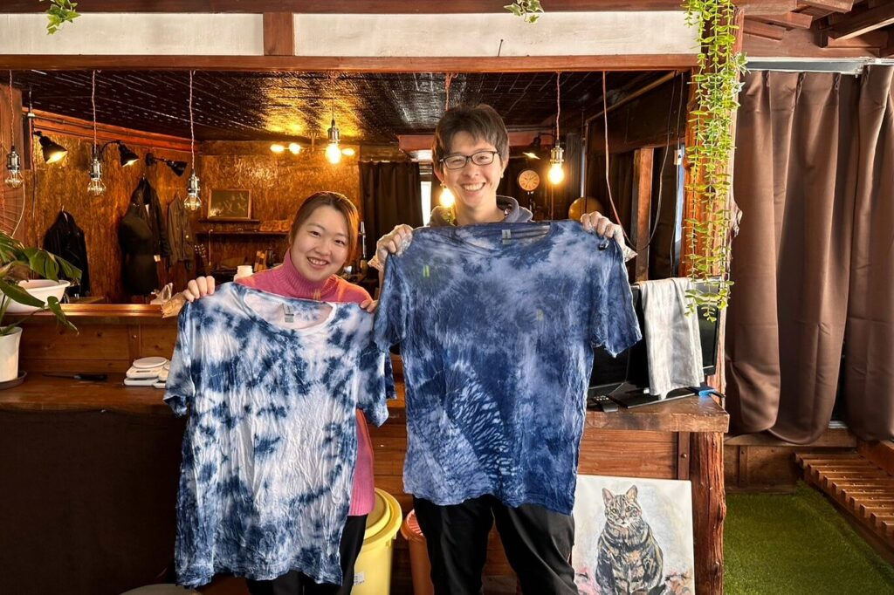
After completing your shirt, take photos together with your fellow participants!
Crafted at the foot of Mt. Fuji using its underground spring water, your creation makes the perfect souvenir from your trip to Yamanashi.
For kids, it’s a hands-on learning experience—and for adults, a joyful moment to relive childhood excitement.
10.Final Notes & Take-Home Care
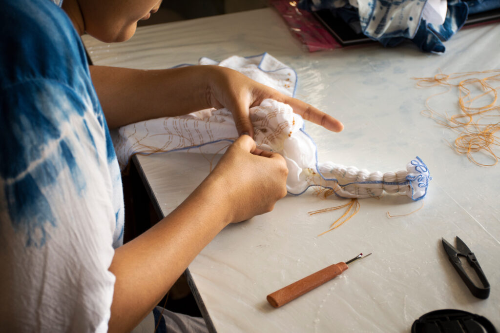
Before you leave, we’ll give you a take-home care guide for your shirt.
It includes tips on how to wash and care for your dyed item at home. We also sell dye kits in-store, so you can refresh your shirt’s color later or try dyeing something else!
Reservations
Our workshops are available year-round and accept reservations24/7 online
If you bring your own material to dye, there will be no additional material fee.
You can choose your preferred dye from three types: Pumice, Indigo, or Sumi ink.
All participants are required to pay a basic fee of 3,200 yen (ages 13 and up). Children aged 12 and under receive a 500 yen discount.
The total cost will vary depending on the material you choose to dye, in addition to the basic fee.
All prices include tax. Children under 4 years old can participate for free.
Individual Dyeing Menu (All prices include tax)
T-Shirt – Add unique colors and patterns to create your one-of-a-kind shirt. +1,000 JPY
Handkerchief +500 JPY
Tote Bag +1,000 JPY
Scarf/Stole +1,000 JPY
Linen Shirt +1,500 JPY
Linen Pants +1,500 JPY
Thai Pants +1,000 JPY
Children under 4 years old may join the workshop for free, but cannot dye their own items. They are welcome to watch and participate alongside family members. If you wish to bring clothing for your child (under 4) to dye together, a basic fee will apply.
Guest Reviews
We’re grateful to have received wonderful feedback from visitors to Takana Sensei’s Yamanashi Wine Dyeing Workshop. Here are just a few of the kind words shared by our guests:
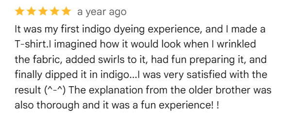
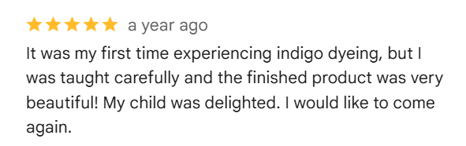
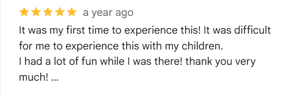
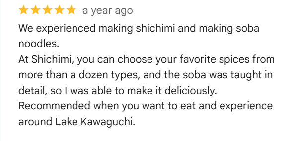
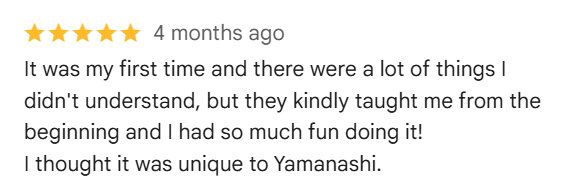
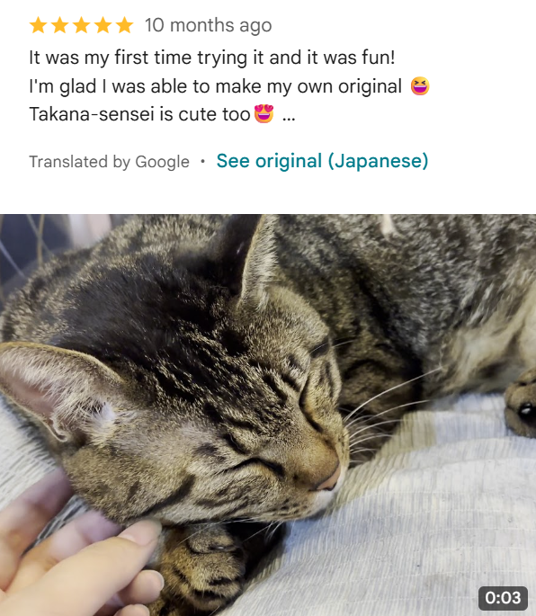
Gallery
Here are some snapshots of our guests enjoying their time at Takana Sensei’s Yamanashi Wine Dyeing Workshop. Take a look at the smiles, creativity, and unique designs made during our sessions.
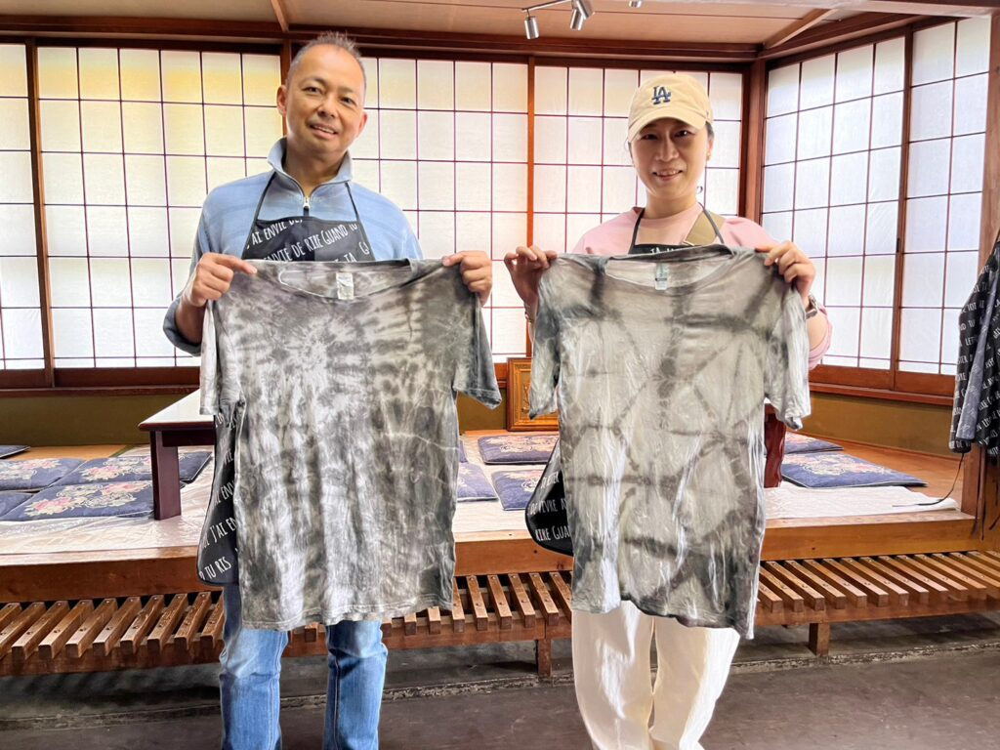
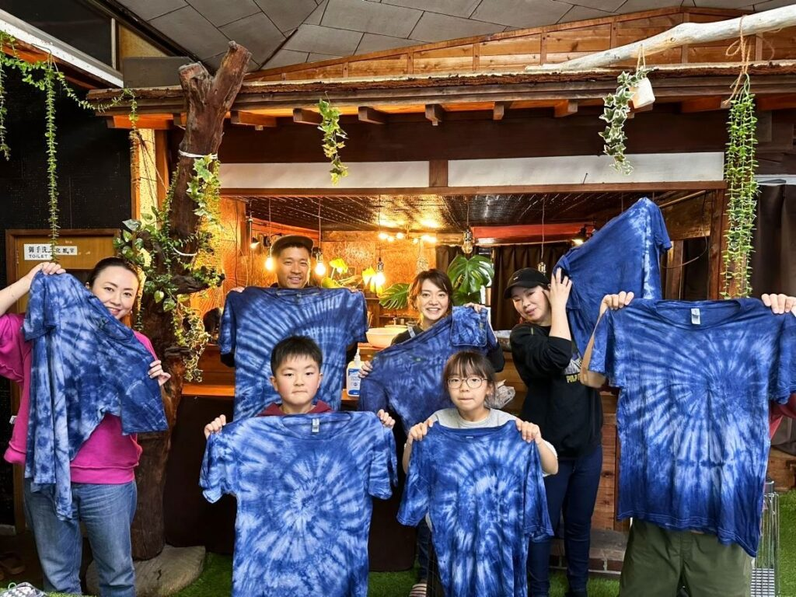
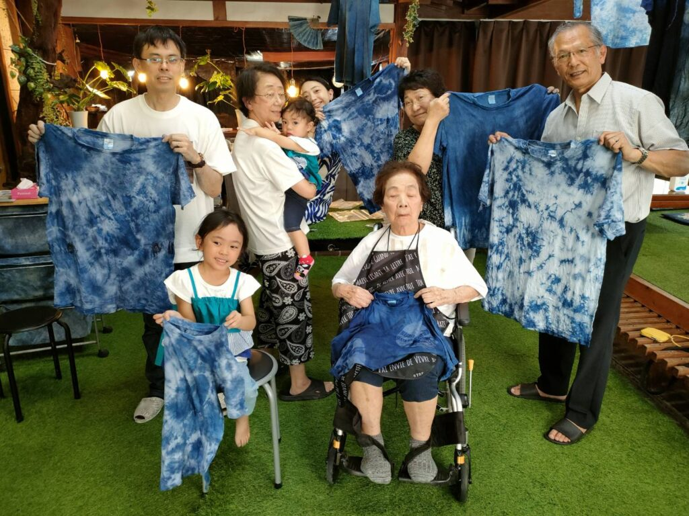
How to Book
Access the Booking Page Reservations are required to join the experience. You can make a reservation using the online booking form, or contact us via WhatsApp or email.
Send Your Preferred Date & Number of Participants Please check the calendar for availability before sending your request. Same-day bookings are not guaranteed and may not be accepted.
Receive Confirmation In addition to the dyeing workshop, we also offer a cooking experience where you can make and enjoy Yamanashi specialties such as houtou (a local noodle stew) and soba. Feel free to add this to your visit for a complete cultural experience.
Pay On-Site Payment can be made on-site by cash, credit card, or QR code.
Reservations
Our workshops are available year-round and accept reservations24/7 online
Here are some of the most common questions about our dyeing workshops. If you don’t find your answer, please feel free to contact us anytime.
Can I only dye T-shirts?
No. We also provide hand towels, stoles, and other items for dyeing.
Can children join the workshop?
Yes. The activity is safe and fun for children. Parents or guardians are welcome to join together.
Are there less crowded times?
Weekdays are usually quieter than weekends and holidays.
Can I join without a reservation?
Walk-ins are welcome if space is available, but we recommend advance booking to secure your spot.
Do you provide English support?
Yes. English-speaking staff are available to assist you.
Can I participate if I have nail extensions or polish?
Yes. No problem. We can provide gloves if needed.
Can I pay by credit card?
Yes. We accept credit cards and cash.
How far is the workshop from Lake Kawaguchi?
It is just a few minutes by car from Lake Kawaguchi.
How long does it take to walk from the nearest station?
About 10 minutes on foot from Kawaguchiko Station.
Is parking available?
Yes. We have free parking spaces for visitors.
Can tour buses park at the workshop?
Yes. Tour buses are welcome with prior reservation.
Can I make a reservation late at night or early in the morning?
Yes. Online reservations are available 24/7.
Is a reservation required?
Advance booking is recommended to guarantee availability.
What is the maximum group size for the workshop?
We can welcome groups of up to 50 participants. Please contact us for larger groups.
Do I need to bring anything?
No. All materials and tools are provided. Please wear clothes that can get a little dyed.
Can I wear my indigo-dyed clothing right away?
Yes. After rinsing and drying, you can wear it the same day.
Will the colors fade in the wash?
Some fading may occur over time. Wash separately in cold water for the first few washes.
Can I take photos or videos during the workshop?
Yes. Photos and videos are welcome.
Is the workshop available on rainy days?
Yes. The workshop is held indoors and is all-weather friendly.
Tip: If you have any special requests (on-site workshops, large groups, language support), please contact us in advance.
Message from Our Founder – “Designing with Nature”
Thank you for visiting our website. My name is Jun Kuwabara, the founder of Takana Sensei’s Yamanashi Wine Dyeing Workshop.
I worked as a hairstylist for 10 years. In the beauty industry, chemical dyes are widely used, and I saw many colleagues leave the profession due to severe hand irritation, as well as customers developing allergies that made it impossible for them to dye their hair.
This led me to discover natural plant-based dyes such as henna and indigo from India and Morocco. I was captivated by the beauty and authenticity of these earth-derived colors. Over time, I also began wearing clothes dyed with natural materials like charcoal and coffee, learning to enjoy the uniqueness of one-of-a-kind items created by nature.
I wanted to share this natural beauty with more people, which is why I started this workshop. Today, travelers from around the world can enjoy this experience here in Yamanashi. I hope that with your own one-of-a-kind creation, your memories of Yamanashi will continue to bring joy long after your trip ends.
— Jun Kuwabara, Founder
Workshop Locations & Access
Takana Sensei’s Yamanashi Wine Dyeing Workshop (Lake Kawaguchi)
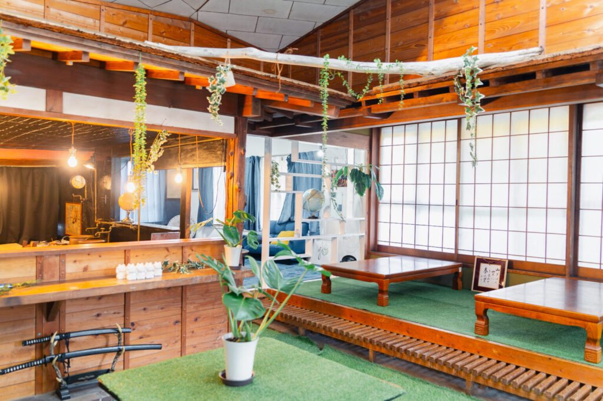
Address：3250-3 Funatsu, Fujikawaguchiko Town, Minamitsuru District, Yamanashi 401-0301, Japan
Parking：Free parking available
Reservation：Reservations are recommended to ensure availability, as we operate on an irregular schedule. Please make your reservation by the day before your desired date.
Hours：11:00 AM – 5:00 PM
Closed：Irregular schedule
Capacity：1–20 participants
Nearest Station：12-minute walk from Kawaguchiko Station (Fujikyu Line)